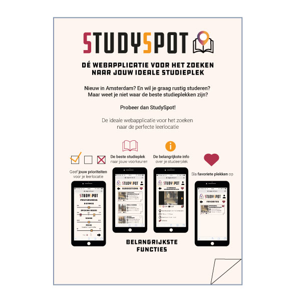
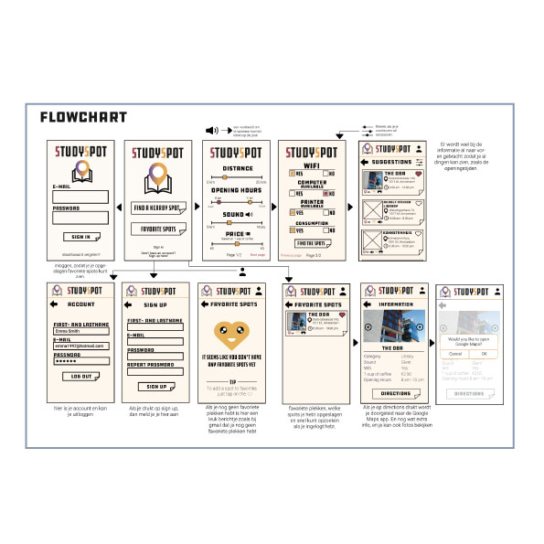
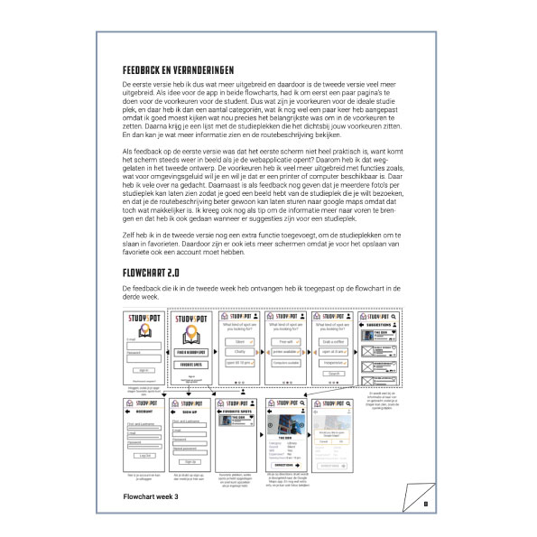
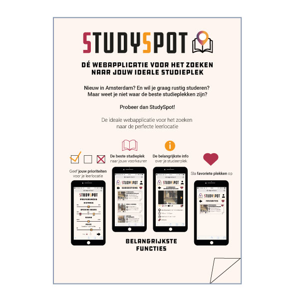
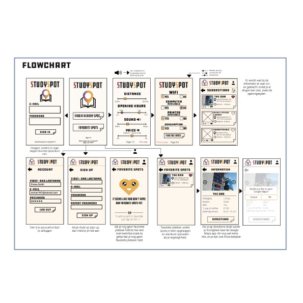
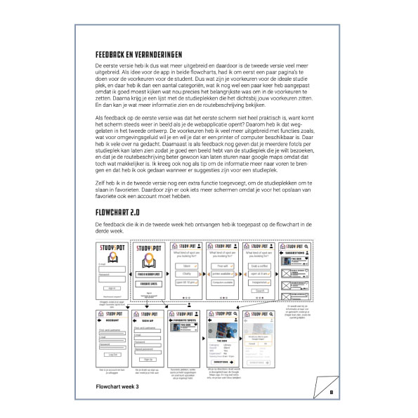

❮
❯
StudySpot
Project individueel
December 2018
Bij dit project combineerde ik vormgeving met eigen onderzoek en HTML&CSS. Ik ging op pad om eigen content te maken, omdat je niks van het internet mocht halen. En deed daarnaast ook onderzoek en testen met mijn prototype. Zo kwam ik weer op nieuwe bevindingen met beter resultaat voor de eindopdracht. Ik leerde hoe ik een flowchart moest maken en ging in gesprek met een fictieve opdrachtgever om op een goed eindproduct te komen. Naast onderzoek moesten we ook vormgeving goed toepassen en de stijl van de opdrachtgever onderzoeken. En als laatste het technische gedeelte toepassen om het eindproduct rond te maken. Hierbij leerde je goed hoe je alle onderdelen bij elkaar kon brengen. Het proces vind je hier.